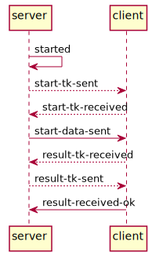
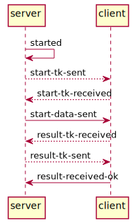

toolcall - call an external tool¶
This is a sample Django package that includes both the tool-user part (code that presents tools to users), the toolcall server part (code that authenticates and authorizes users, and redirects the tool-user to the tool), and the tool implementor part (this is a stub implementation of the client).
New clients should start by looking at the included client, http://127.0.0.1:8000/admin/toolcall/client/1/, and the toolcall/tooluser directory; and perhaps by running through the user flow (http://127.0.0.1:8000/) but please read the user flow section below for context.
About this package (quickstart..)¶
This package is self-contained in the sense that it includes the enire user flow and a (sqlite) database that can be used for testing.
This project is set up to demonstrate the toolcall api.
install¶
Create a new virtualenv and download the code:
> mkvirtualenv toolcall
toolcall> git clone https://github.com/thebjorn/toolcall.git
toolcall> cd toolcall
then install the requirements, and the toolcall package in dev mode:
toolcall> pip install -r requirements.txt
toolcall> pip install -e .
create the database¶
To create the sqlite database with syncdb, but answer no to the superuser question:
(toolcall) go|c:\github\toolcall> python manage.py syncdb
Operations to perform:
Synchronize unmigrated apps: toolcall
Apply all migrations: admin, contenttypes, auth, sessions
Synchronizing apps without migrations:
Creating tables...
Creating table toolcall_client
Creating table toolcall_tool
Creating table toolcall_toolcall
Creating table toolcall_toolcalllog
Creating table toolcall_toolcallresult
Installing custom SQL...
Installing indexes...
Running migrations:
Applying contenttypes.0001_initial... OK
Applying auth.0001_initial... OK
Applying admin.0001_initial... OK
Applying sessions.0001_initial... OK
You have installed Django's auth system, and don't have any superusers defined.
Would you like to create one now? (yes/no): no
Load the included fixture¶
(toolcall) go|c:\github\toolcall> python manage.py loaddata dumpdata.json
Installed 50 object(s) from 1 fixture(s)
Note
The fixture contains a superuser with username/password == admin/admin, and a regular user with username/password == user/user.
Run the server¶
python manage.py runserver
User flow¶
There is one client defined which you can view at: http://127.0.0.1:8000/admin/toolcall/client/1/ (in production it is a requirement that the urls use a https transport with a valid certificate).
The endpoints are declared at http://127.0.0.1:8000/.api/toolcall/v2/ It is not necessary to discover these (i.e. they can be manually read and hard-coded into your client). We will update the api version if any of the urls change.
Open the start page at http://127.0.0.1:8000/ Since both the server and the client are running on the same host here, it is better if you use a separate web browser from the one you opened the admin site in.
Step 1: user clicks button to start tool/exam¶
view: toolcall.views.home
The button opens a new window for running the exam. The window is opened with noopener.
Note
as a shortcut I’ve re-used the admin site’s login template for user logins in this example client. You should use your regular procedures for logging users in.
Step 2: user is redirected to client with access_token¶
view toolcall.tooluser.views.start_tool
This view will normally redirect directly to the client, but here it presents
a page with some debug information. Click the “start tool” link at the bottom to
proceed. In debug mode you have 200 seconds (toolcall.defaults.TOOLCALL_TOKEN_TIMEOUT_SECS
before the token is invalid).
Step 3: client¶
Clients need to implement the urls/views in toolcall/toolimplementor.
There are two urls that need to be implemented. Here they’re called:
url(r'^start-token/$', views.receive_start_token),
url(r'^result-token/$', views.send_result_data),
which correspond to the values in the Client model.
start-token is called after step 2 when the user is redirected with an
access_token.
Check toolcall/toolimplementor/views.py:receive_start_token for
a sample implementation.
I would suggest creating auth.Users and logging them in.
Note
You’ll need to save some of the start data values so you can return them to us with the result.
The client runs the exam¶
I’ve illustrated this by a redirect to toolcall.toolimplementor.views.run_my_tool
that only creates a token and a result structure, store them in redis, and sends the token
to the server’s result token url (the client name is also sent).
Step 4: the server sends result token¶
The server immediately sends the token back to the client to the
toolcall.toolimplementor.views.send_result_data view (result-token/ url, as defined
in the Client model).
The client fetches the result data from redis and returns it.
Comments regarding the sample client implementation¶
- I’ve used redis for token storage because it’s part of our stack. The client is of course free to use any other solution.
- the persnr/unique ID algorithm here is not the one we use, but creates similar looking unique IDs that are unique and durable per user.
- I’ve kept the client code simple for pedagogical reasons.
toolcall.viewsis more similar to what we use in production. - The ToolcallResult model is not used here (it normally stores the result data verbatim.
- The progress records (ToolCall, ToolCallLog) are functional but not safe (the transitions are neither correct nor checked - but they are logged..)
Toolcall protocol¶
The following actor names are used synonymously:
| user/candidate/browser: | |
|---|---|
| The person starting the tool/exam. | |
| client/tool: | The external (to NorskTest) entity that runs the tool. |
| server/NorskTest: | |
| That’s us. | |
| tool/exam: | The “thing” being run (most frequently an exam). |
 
The user/browser is indicated in blue, red is server-to-server communication over a secure channel (ie. https).
- We authenticate and authorize the Candidate so only candidates
that have been logged in with us are sent to
toolcall. We generate a unique token and redirect the candidate to an url defined in thetoolcall.models.tool_models.Clientmodel. - The client sends a server-to-server GET request over a secure channel.
- NorskTest returns json-data containing tool start data. The data
can/is customized to the individual client. The start-data:
- must include a uniqe person reference (the client can e.g. use this to adapt the test when the candidate starts the second attempt). The person reference is sent back to NorskTest in step #6.
- can include the name of the candidate (for personalization).
- etc.
- The client runs the (external) tool and sends a (new) token back
to NorskTest
- This is shown as a redirect in the diagram, meaning that it is possible for the candidate to return to the portal (whence they started the tool call). This should be a server-to-server communication if the user shouldn’t be redirected back to NorskTest.
- NorskTest sends a server-to-server GET request over a secure channel.
- The client returns result-data in json format, containing the unique person reference (as received in #3), pass/fail, and a opaque id that can be used to track the call after the fact (to support complaint processing etc.)
The client ought to be able to validate its own tokens (e.g. by adding a checksum).
The token must only be valid for a short period of time, i.e. the period between 1 to 2, and 4 to 5, must be short. This will prevent a situation where an attacker has a large set of valid tokens that can be attacked.
It must only be possible to resolve a token once (to prevent replay attacks).
Tokens ought to be saved (or logged) so it is possible to debug the system across the server/client boundary.
Note
It is possible to implement a token transformation (decryption) between 1/2 and 4/5 so tokens transmitted over an open channel must be encrypted before sending on a secure channel. This is currently not seen as necessary.
result-data¶
The views in https://github.com/thebjorn/toolcall/blob/master/toolcall/toolimplementor/views.py are what you need to implement/integrate with your code, :fn:`toolcall.toolimplementor.views.run_my_tool` creates the result data structure (and stores it in redis); and :fn:`toolcall.toolimplementor.views.send_result_data` returns the result data structure to NorskTest.
The result data should contain the following fields
| persnr: | the value you received for this field in the start-data. |
|---|---|
| toolcall_participant_id: | |
| an opaque reference to the progress/result data in your system (so we can send this to you when resolving issues). | |
| exam: | the value you received in start-data [1] |
| score: | integer value reresenting the score the user obtained (optional) |
| passed: | true if the user passed the exam, otherwise false |
| tstamp: | an iso formatted timestamp rerpresnting when the user finished the exam |
| system: | the value you received in start-data |
| exam_kind: | the exam context (optional, e.g. self-test, proctored, etc.), should generally be the same as received in start-data. |
| [1] | extended with adaptive values if needed (e.g. if you’re sent “excel” and your exam adapts to user answers you could return e.g. “excel:expert”, “excel:basics” etc.) |
Todo
exam and exam_kind is in flux.
endpoints¶
Server¶
The server has two endpoints. The endpoints are defined in toolcall/toolcall-api.yaml and are also available from http://127.0.0.1:8000/.api/toolcall/v2/
Todo
the production server is not ready for v2 yet, but this sample package does.
start_data¶
In this sample app it is: http://localhost:8000/fetch-token/
It should be called with the start-data token as a GET parameter
named access_token, e.g.:
http://localhost:8000/fetch-token/?access_token=1W6ofOChZt1AS4bdpkbOVKpdptVi0YDB48-UAZXz8PuB06cvNtwoiXBM20
result_token¶
In this sample app it is: http://localhost:8000/result/
It should be called with the result token as a GET parameter
named access_token, and the client name in a GET parameter
named client, e.g.:
http://localhost:8000/result/?access_token=3525841484&client=testclient
Client¶
The client has two endpoints. The endpoints are defined in the
toolcall.models.tool_models.Client model.
receive_start_token_url¶
Url where we redirect the end user with a token. In the sample client this is: http://localhost:8000/client/start-token/
receive_result_token_url¶
Url where we return the result token and expect result data in return. In the sample client this is: http://localhost:8000/client/result-token/
ToDo list¶
Todo
the production server is not ready for v2 yet, but this sample package does.
(The original entry is located in c:\github\toolcall\docs\endpoints.rst, line 12.)
Todo
exam and exam_kind is in flux.
(The original entry is located in docs/result-data.rst, line 50.)
Todo
the production server is not ready for v2 yet, but this sample package does.
(The original entry is located in docs/endpoints.rst, line 12.)
Todo
exam and exam_kind is in flux.
(The original entry is located in c:\github\toolcall\docs\result-data.rst, line 50.)
api-docs (mostly for cross referencing)¶
- toolcall package
- Subpackages
- Submodules
- toolcall.admin module
- toolcall.api module
- toolcall.apiutils module
- toolcall.apps module
- toolcall.auth_backend module
- toolcall.defaults module
- toolcall.dkhttp module
- toolcall.dktoken module
- toolcall.jason module
- toolcall.jsondecoder module
- toolcall.message module
- toolcall.toolcall_exceptions module
- toolcall.toolresult module
- toolcall.urls module
- toolcall.views module
- Module contents